Every program I ran was measured against a number someone cared about: a member's retention, a partner's ROI, a funder's milestones, a sponsor's turnout. On Guam every decision cost something, so I learned to track what mattered and deliver it. This is how that built twelve years of Unified, and the systems I build now.
The marker beside each chapter shows where it happened.
Each stakeholder had a number they needed to move. I set up the tracking, did the work, and reported back on it.
CRM tracking of attendance, engagement and which services people use. Automations re-engage members before they drift away, and flag the moments a coach needs to step in.
GloFox automations for a 30-day inbound lead sequence, free class booking to conversion, and a 7-day trial. Instagram DM flows now qualify leads and book them in.
Negotiated per-member fees, subsidized memberships and member discounts across 300+ lives. Reported ROI to each partner, and renegotiated the terms through the pandemic when coverage changed.
Turned the grant terms into tracked obligations and milestones, ran the youth CrossFit, Jiu-Jitsu and nutrition programs, and reported on spending compliance and economic impact for 2024 and 2025.
Directed three competition series. Secured Bank of Guam, RAM Trucks, Michelob Ultra, 76 and Circle K, and managed event design, staffing and vendors.
Kept affiliate trademark and brand standards while building Unified's own identity: values, color palette, content pillars and the BASE onboarding program.
I played soccer for Guam and raced motocross across the Asia-Pacific region. The two could not be more different, and they taught me the same thing. Preparation shows up under pressure, and nothing replaces repetition.
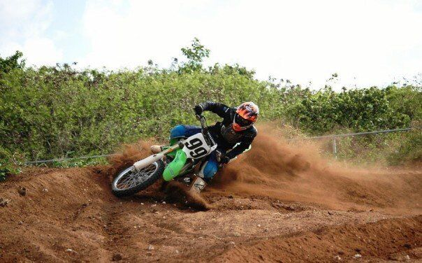
I studied business management and entrepreneurial studies, with a concentration in marketing. I knew I wanted to build something. I did not know what yet.
My first job was client relations and events at a Guam marketing and production company. I kept client communication and on-site logistics on schedule across several productions at once.
It taught me where brands actually get built. It happens in the gap between what a client wants and what a team can deliver on time.
I attended my first CrossFit seminar in Tokyo, in the middle of a freak snowstorm. I had just finished my degree in entrepreneurial studies and marketing. I left that weekend obsessed with the methodology and the education behind it.
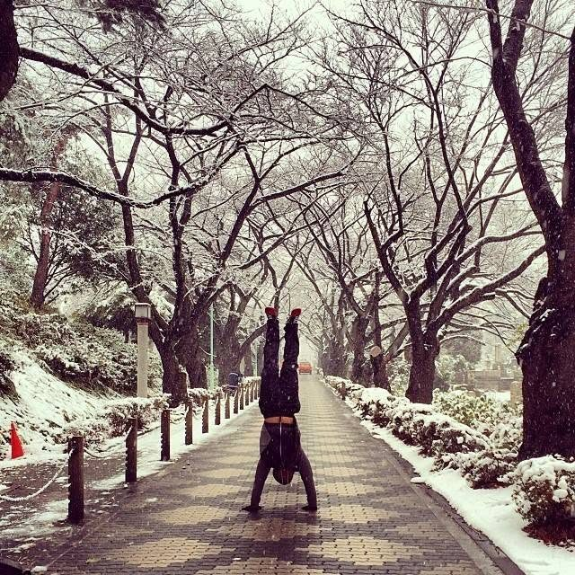
Around the time I earned my CrossFit Level 1, I also started observing and training under Ed Haynes, one of the leading coaches in the Asian CrossFit community, at CrossFit CSTL (Coastal Fitness).
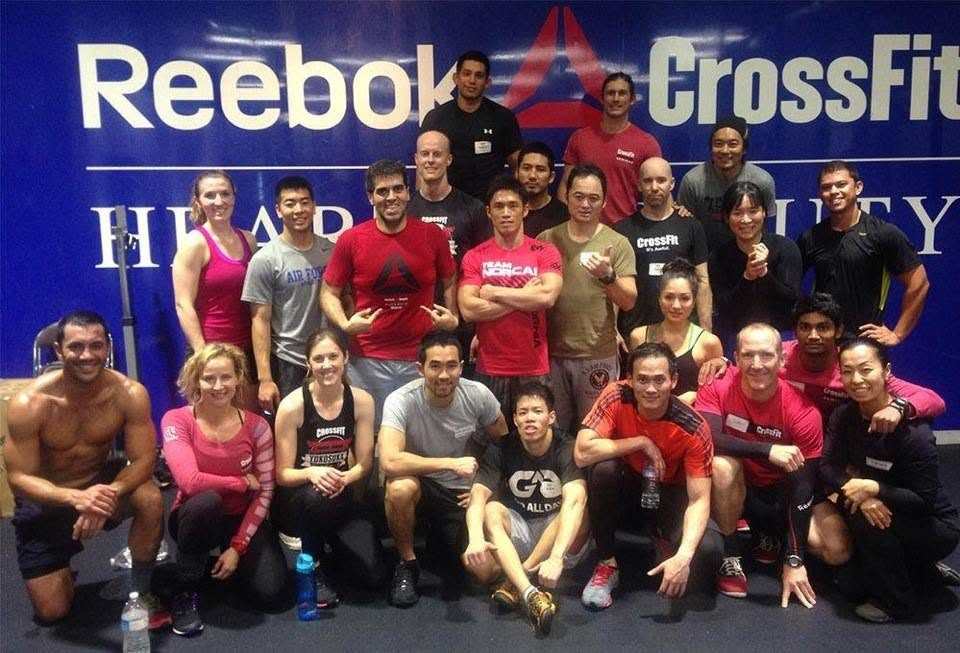
Later that year my brother and I opened Unified CrossFit on Guam. Over the next twelve years it grew into a gym with 180+ members, with income from memberships, personal training, corporate wellness, events, youth programs and a Brazilian Jiu-Jitsu partnership.
The first corporate partner agreement was with Take Care Insurance. Calvo's SelectCare followed in 2015. Their plans subsidize memberships for their subscribers and share discount benefits with our members. Each renewal meant tracking what both sides committed to, reporting results back, and renegotiating terms. We have renewed every year since, and the agreements covered 300+ lives.
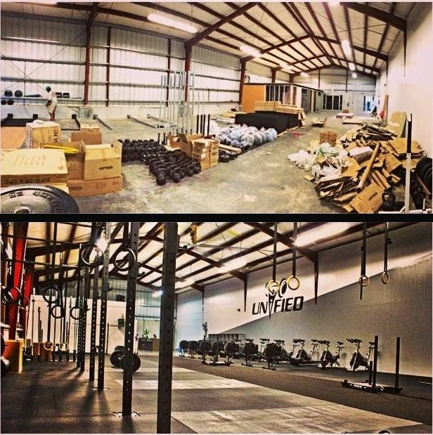
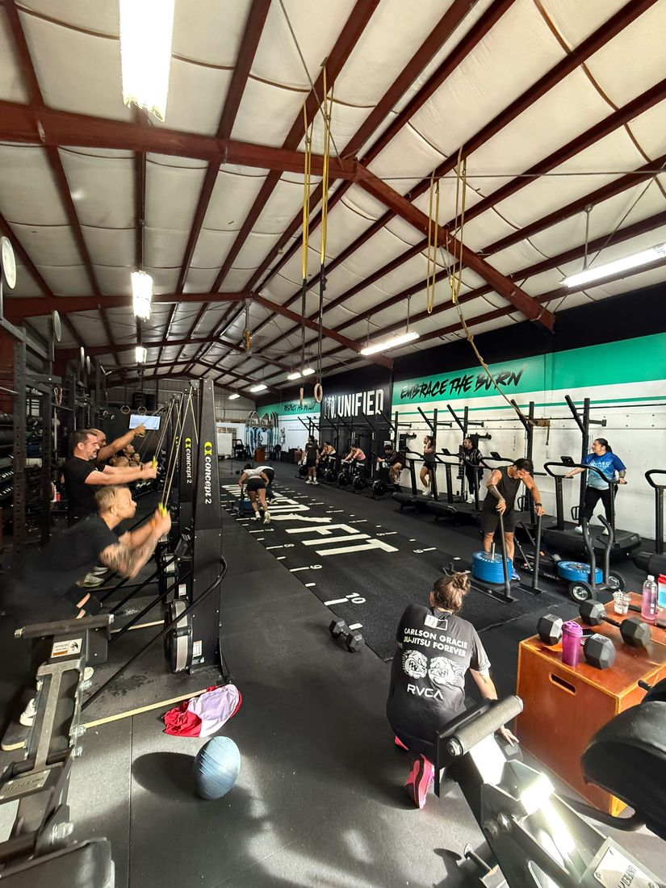
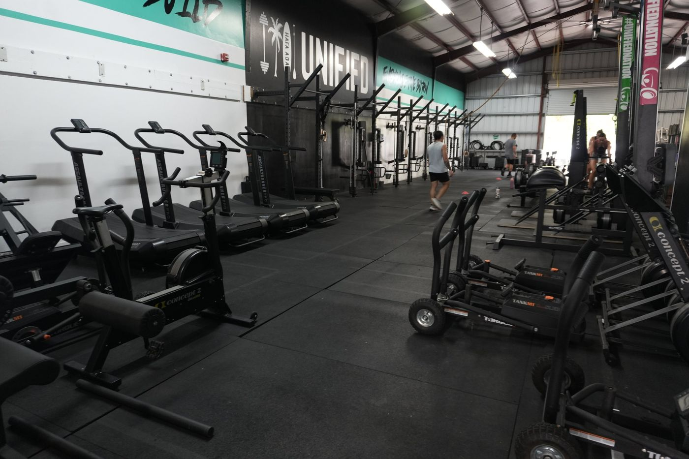
A seminar on Guam is a serious investment. Flights ran around $2,000 before the course fee, room and board. I spent two years studying exercise science and kinesiology first, then flew to CrossFit Del Mar for my Level 2.
Every dollar had to come back as better coaching for our members. That is still how I think about education. The person who commits to it is making a real promise, and whoever delivers it has to honor that every time.
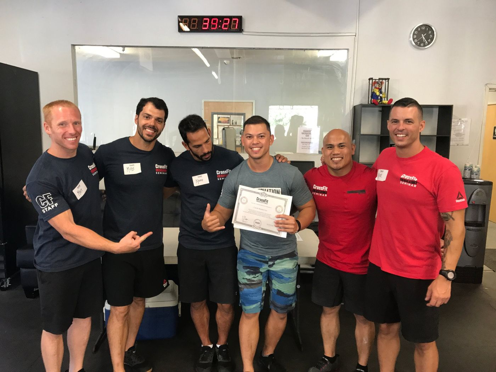
I first took on Ethan Elwell to prepare him for soccer tryouts. He was finishing his junior year of high school and would be playing in front of college scouts the following year. We quickly saw that he had potential to excel in CrossFit.
With his family's permission, we entered him in the CrossFit Open. In his first year, with only six months of CrossFit, he placed 2nd in Asia. The next year we built a full training plan, and he qualified for the CrossFit Games.
He ranked number one in the Asia standings and Top 15 in his age group. At the Games he placed in the top 5, even with a fractured collarbone on the last day of events.
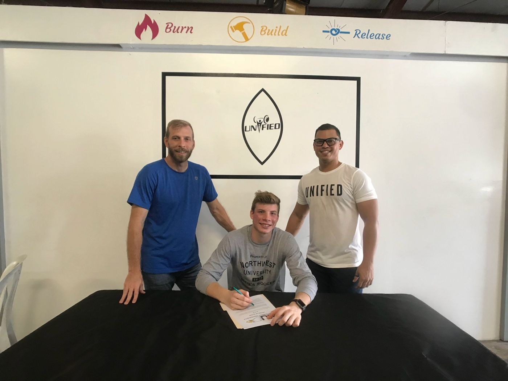
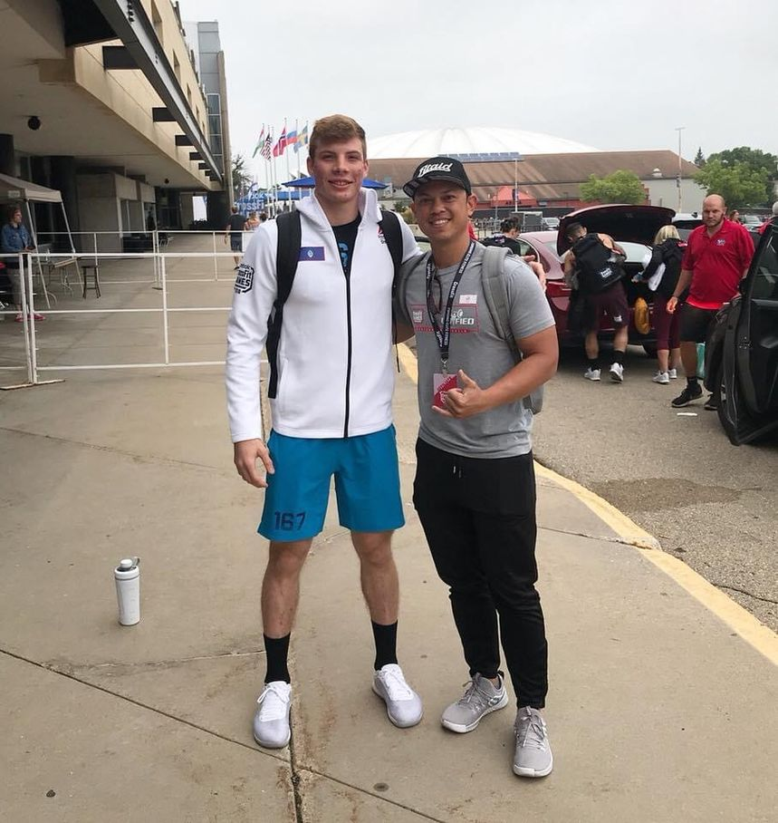
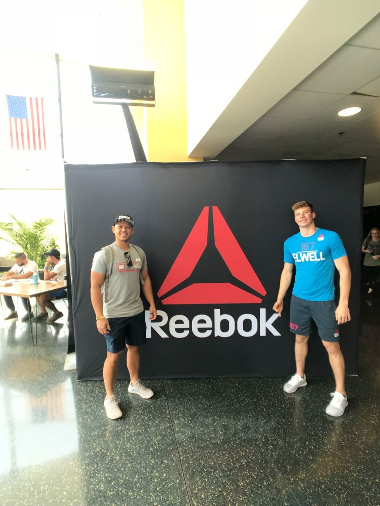
I co-founded and directed an event series with three formats: the Functional Fitness League, Dry-Tri, and Lift Heavy Lift Fast. Dry-Tri came out of the pandemic, as a way to bring people back outdoors together.
Events drew 75 to 100 athletes. Sponsors included Bank of Guam, RAM Trucks, Michelob Ultra, 76 and Circle K. Staffing and logistics forced a pause in 2023, and I am working to bring it back.
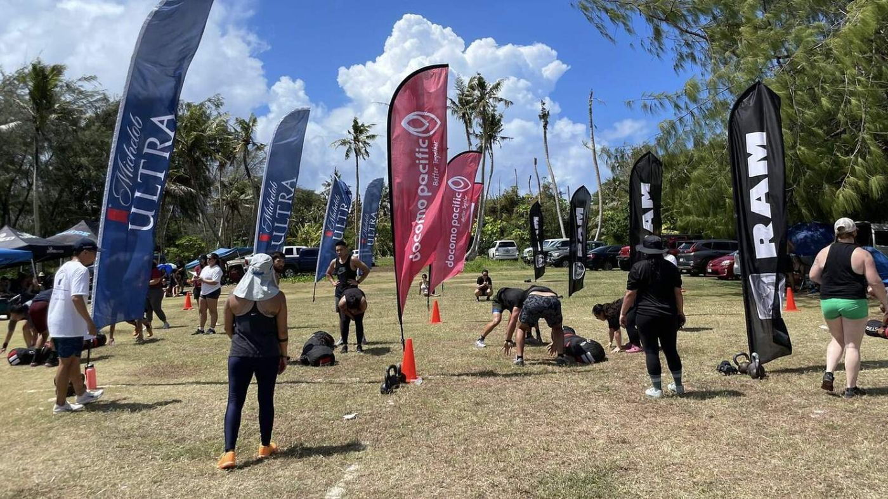
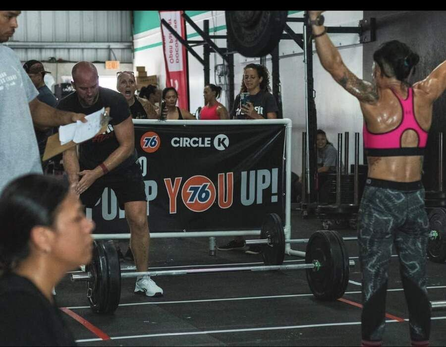
The pandemic closed the gym with no end date, and the business depended on people sharing a room. I spent two years deciding which services could survive and rebuilding the rest. When coverage changed for our health plan partners, I negotiated amendments and coordinated the changes across the front desk, the coaches and marketing.
In the middle of that stretch I bought full ownership. Afterward I built the Unified Fit identity myself, with the tagline Become more capable, four brand values, five content pillars, and an onboarding program called Unified BASE.
I wrote and administered a $250,000 federal grant that funded CrossFit, Jiu-Jitsu and nutrition education for underserved youth, with every program run through Unified. I turned the grant terms into tracked obligations and milestones, then reported on spending compliance and economic impact.
I moved the gym across three platforms, Wodify, Mindbody and GloFox, and built the automations inside GloFox. They included a 30-day inbound lead sequence, a free class booking-to-conversion flow, and a 7-day trial workflow.
More recently I use AI to code landing pages and automation workflows, then stress-test them before they go live. The CRM automations track attendance, engagement and service popularity. They re-engage members before they churn and flag the moments when a person needs to step in. Churn stayed under 5%, and 80 to 85% of finished trials converted to paid.
Fitness changes fast, so I watch where athletes are heading and build offers to meet them. Unified now runs HYROX training and a free HYROX primer for new leads, alongside CrossFit. I built the BASE onboarding series so a new member starts with coaching, not a guess.
When the tools changed, I moved the gym from Wodify to Mindbody to GloFox. When AI got useful, I used it to build the automations and landing pages. I take part in the CrossFit Open and HYROX myself, so I hear what athletes ask for before it shows up in a report.
In early 2026 I moved to Claremont, California, and stepped back from day-to-day operations. I still own Unified. The move gave me room to ask what I want to build next.
The answer so far is more of the same work for other businesses: websites, CRM automation, an outbound sales process, and customer journeys designed around AI.
Two of our coaches went on to open their own gyms, and many members became trainers themselves. I also coached Ethan Elwell, a teenage athlete, to the top 5 at the 2018 CrossFit Games. That is the work I am proudest of.
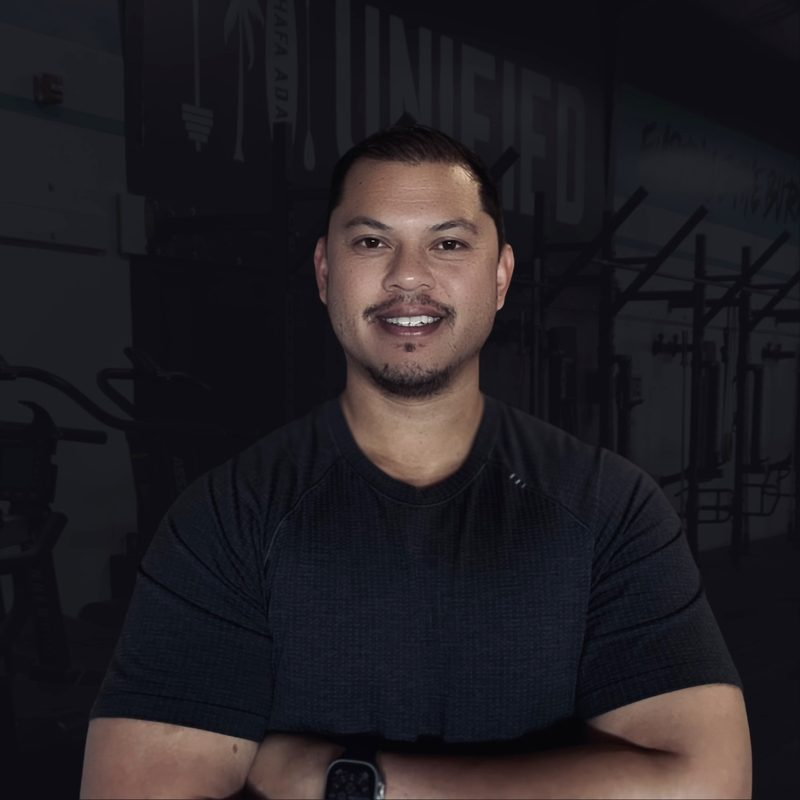